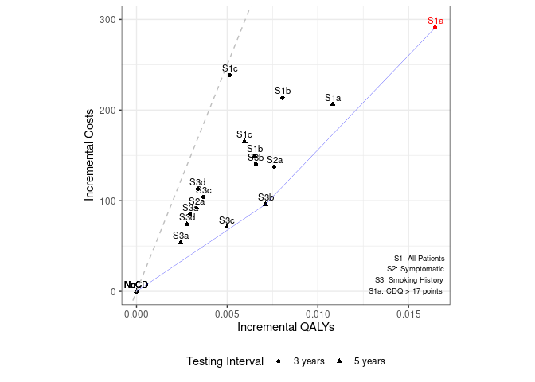
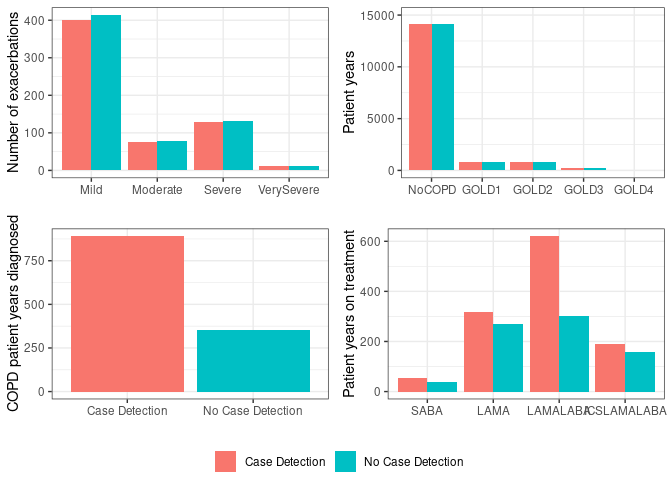

Reviewed results from 50 million (as in their repository) and decided to run 100 million (as in paper). Total time used: 18h 31m (46.3%)
09.16-09.19, 09.36-10.22: Review results from 50 million agents and set to run with 100 million
I looked over them, comparing them to the article.
I had to remind myself of what appendix 6 v1 vs v2 were, recalling that I’d remained uncertain on whether the implementation of this figure was correct. Version 2 was the “more correct”, so I removed version 1. What had remained uncertain for version 2 was how to adjust the results. I had multiplied by 2000, and found that resulted in all bars matching except SABA, and this still remained the case.
For table 3, I add back in the code for comparing against the original.
The results from 50 million are closer to the original.
Although note, these were run in parallel to each other, so total time required (with our machine) was 15 hours 23 minutes.
Table 3:
import pandas as pdpd.set_option('display.max_columns', None)pd.read_csv('50m_tab3.csv')
Scenario
Testing interval
Costs per patient
QALYs per patient
ICER
INMB (ranking)
0
S0: No case detection
NaN
$2149
12.545
NaN
NaN
1
(S1a) CDQ ≥ 17 points
3 years
$2440
12.562
17669.0
533(1)
2
(S1a) CDQ ≥ 17 points
5 years
$2355
12.556
19073.0
335(2)
3
(S1b) Screening spirometry
3 years
$2362
12.553
26497.0
189(5)
4
(S1b) Screening spirometry
5 years
$2298
12.552
22920.0
177(8)
5
(S1c) CDQ + screening spirometry
3 years
$2387
12.550
46445.0
18(16)
6
(S1c) CDQ + screening spirometry
5 years
$2314
12.551
27818.0
132(9)
7
(S2a) Screening spirometry
3 years
$2286
12.553
18082.0
242(4)
8
(S2a) Screening spirometry
5 years
$2241
12.549
27650.0
74(11)
9
(S3a) CDQ ≥ 19.5 points
3 years
$2234
12.548
28714.0
63(14)
10
(S3a) CDQ ≥ 19.5 points
5 years
$2203
12.548
22107.0
68(12)
11
(S3b) CDQ ≥ 16.5 points
3 years
$2289
12.552
21354.0
188(6)
12
(S3b) CDQ ≥ 16.5 points
5 years
$2245
12.552
13503.0
260(3)
13
(S3c) Screening spirometry
3 years
$2253
12.549
28161.0
81(10)
14
(S3c) Screening spirometry
5 years
$2220
12.550
14224.0
178(7)
15
(S3d) CDQ + screening spirometry
3 years
$2262
12.549
33377.0
56(15)
16
(S3d) CDQ + screening spirometry
5 years
$2223
12.548
26612.0
65(13)
pd.read_csv('50m_tab3_compare_to_original.csv')
Scenario
Interval
CostpAgent_paper
CostpAgentAll
CostpAgentAll_repo
CostMyDiff
CostMyPerc
CostRepoDiff
CostRepoPerc
QALYpAgent_paper
QALYpAgentAll
QALYpAgentAll_repo
QALYMyDiff
QALYMyPerc
QALYRepoDiff
QALYRepoPerc
ICER_paper
ICERAdj
ICERAdj_repo
ICERMyDiff
ICERMyPerc
ICERRepoDiff
ICERRepoPerc
IncrementalNMB_paper
INMB
INMB_repo
INMBMyDiff
INMBMyPerc
INMBRepoDiff
INMBRepoPerc
0
S0
NaN
2151
2149
2151
2
0.1%
0
0.0%
12.546
12.545
12.545
0.001
0%
0.001
0%
NaN
NaN
NaN
NaN
NaN
NaN
NaN
NaN
NaN
0
NaN
NaN
NaN
NaN
1
S1a
3 years
2438
2440
2439
-2
-0.1%
-1
0.0%
12.560
12.562
12.560
-0.002
0%
0.000
0%
19632.0
17669.0
19665.0
1963.0
11.1%
-33.0
-0.2%
444.0
533.0
446
-89.0
-16.7%
-2.0
-0.40%
2
S1a
5 years
2356
2355
2355
1
0.0%
1
0.0%
12.556
12.556
12.557
0.000
0%
-0.001
0%
19847.0
19073.0
16600.0
774.0
4.1%
3247.0
19.6%
312.0
335.0
411
-23.0
-6.9%
-99.0
-24.10%
3
S1b
3 years
2363
2362
2365
1
0.0%
-2
-0.1%
12.554
12.553
12.552
0.001
0%
0.002
0%
25894.0
26497.0
31076.0
-603.0
-2.3%
-5182.0
-16.7%
198.0
189.0
131
9.0
4.8%
67.0
51.10%
4
S1b
5 years
2296
2298
2298
-2
-0.1%
-2
-0.1%
12.552
12.552
12.551
0.000
0%
0.001
0%
23187.0
22920.0
25501.0
267.0
1.2%
-2314.0
-9.1%
168.0
177.0
142
-9.0
-5.1%
26.0
18.30%
5
S1c
3 years
2386
2387
2386
-1
0.0%
0
0.0%
12.551
12.550
12.551
0.001
0%
0.000
0%
46956.0
46445.0
42697.0
511.0
1.1%
4259.0
10.0%
15.0
18.0
40
-3.0
-16.7%
-25.0
-62.50%
6
S1c
5 years
2313
2314
2311
-1
0.0%
2
0.1%
12.550
12.551
12.551
-0.001
0%
-0.001
0%
38673.0
27818.0
29600.0
10855.0
39.0%
9073.0
30.7%
47.0
132.0
110
-85.0
-64.4%
-63.0
-57.30%
7
S2a
3 years
2286
2286
2287
0
0.0%
-1
0.0%
12.553
12.553
12.552
0.000
0%
0.001
0%
18908.0
18082.0
21184.0
826.0
4.6%
-2276.0
-10.7%
223.0
242.0
186
-19.0
-7.9%
37.0
19.90%
8
S2a
5 years
2246
2241
2245
5
0.2%
1
0.0%
12.551
12.549
12.550
0.002
0%
0.001
0%
17514.0
27650.0
20394.0
-10136.0
-36.7%
-2880.0
-14.1%
176.0
74.0
137
102.0
137.8%
39.0
28.50%
9
S3a
3 years
2234
2234
2232
0
0.0%
2
0.1%
12.548
12.548
12.548
0.000
0%
0.000
0%
30366.0
28714.0
32247.0
1652.0
5.8%
-1881.0
-5.8%
54.0
63.0
45
-9.0
-14.3%
9.0
20.00%
10
S3a
5 years
2207
2203
2207
4
0.2%
0
0.0%
12.548
12.548
12.548
0.000
0%
0.000
0%
22636.0
22107.0
22694.0
529.0
2.4%
-58.0
-0.3%
68.0
68.0
67
0.0
0.0%
1.0
1.50%
11
S3b
3 years
2292
2289
2289
3
0.1%
3
0.1%
12.553
12.552
12.553
0.001
0%
0.000
0%
18438.0
21354.0
18157.0
-2916.0
-13.7%
281.0
1.5%
241.0
188.0
243
53.0
28.2%
-2.0
-0.80%
12
S3b
5 years
2250
2245
2248
5
0.2%
2
0.1%
12.552
12.552
12.551
0.000
0%
0.001
0%
16251.0
13503.0
17325.0
2748.0
20.4%
-1074.0
-6.2%
206.0
260.0
183
-54.0
-20.8%
23.0
12.60%
13
S3c
3 years
2256
2253
2255
3
0.1%
1
0.0%
12.550
12.549
12.550
0.001
0%
0.000
0%
23972.0
28161.0
20700.0
-4189.0
-14.9%
3272.0
15.8%
114.0
81.0
148
33.0
40.7%
-34.0
-23.00%
14
S3c
5 years
2224
2220
2221
4
0.2%
3
0.1%
12.549
12.550
12.549
-0.001
0%
0.000
0%
20278.0
14224.0
19250.0
6054.0
42.6%
1028.0
5.3%
107.0
178.0
113
-71.0
-39.9%
-6.0
-5.30%
15
S3d
3 years
2263
2262
2261
1
0.0%
2
0.1%
12.549
12.549
12.550
0.000
0%
-0.001
0%
28245.0
33377.0
23462.0
-5132.0
-15.4%
4783.0
20.4%
86.0
56.0
124
30.0
53.6%
-38.0
-30.60%
16
S3d
5 years
2227
2223
2226
4
0.2%
1
0.0%
12.548
12.548
12.548
0.000
0%
0.000
0%
27591.0
26612.0
26517.0
979.0
3.7%
1074.0
4.1%
62.0
65.0
67
-3.0
-4.6%
-5.0
-7.50%
Looking at each of the columns…
Costs per patient - max difference from paper is 5 (0.2%) (e.g. $2250 vs $2245 for S3b 5 years). With lower number of agents, max difference was 23 (1%)
QALYs per patient - max difference from paper is 0.002 (0%) (e.g. 12.562 vs 12.560). With lower agent numbers, max difference was 0.01 (0.1%)
ICER - max difference is 10,136 (36.7%) (mine 27,650 v.s. paper 17,514) for S2A 5 years. Biggest percentage difference was 42.6% (14,224 vs 20,278). With lower agent numbers, my biggest absolute difference was 93,297, and biggest percentage difference was 458%.
INMB - max difference was 102 (137.8%) (mine 74 vs paper 176 for S2A 5 years).
Due to the large difference in ICERs and INMB, I would unfortunately say this is not reproduced.
Figure 3:

This looks fairly similar, at a glance (unlike with higher agent numbers which was wildly different). I think I would argue this to be reproduced, as the points are pretty close to where they were in the original, although given the tiny scale is this working to, this would definitely require some consensus and second opinion.
Appendix 6:

This hasn’t changed much from running with 50 million agents v.s. lower numbers. The same issue remains - that everything is spot on except SABA - and so, unfortunately, still not reproduced. My result is very similar to the result from their repository when they ran with 50 million.
Having looked over these, I think it would be worth running this again with 100 million (as in the paper), just to be sure, in case that does happen to resolve the remaining differences in Table 3 (big difference) and Figure 3 (smaller difference) (although unfortunately I suspect the difference might remain for Appendix 6 as that didn’t change with agent numbers).
Timings
import syssys.path.append('../')from timings import calculate_times# Minutes used prior to todayused_to_date =1062# Times from todaytimes = [ ('09.16', '09.19'), ('09.36', '10.22')]calculate_times(used_to_date, times)
Time spent today: 49m, or 0h 49m
Total used to date: 1111m, or 18h 31m
Time remaining: 1289m, or 21h 29m
Used 46.3% of 40 hours max